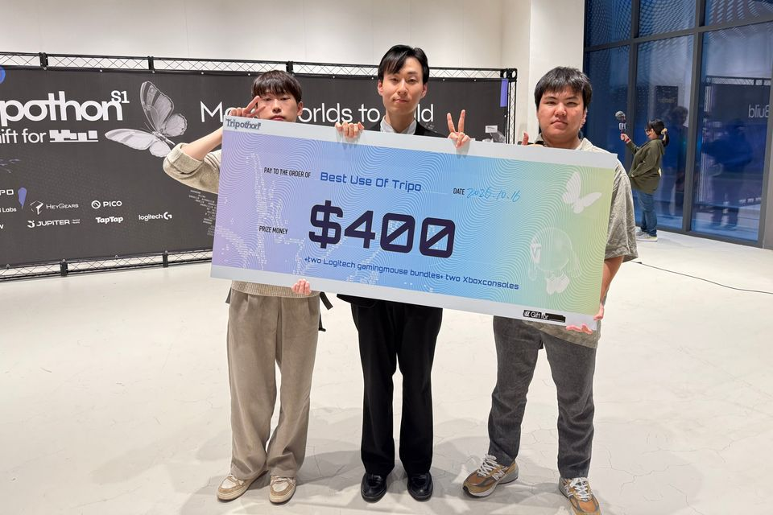
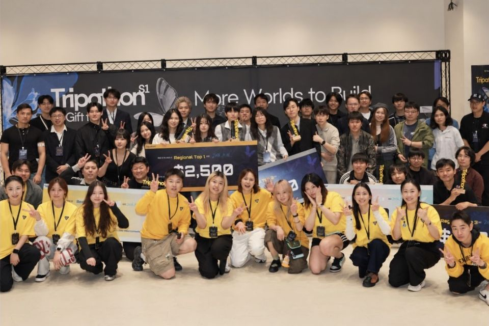
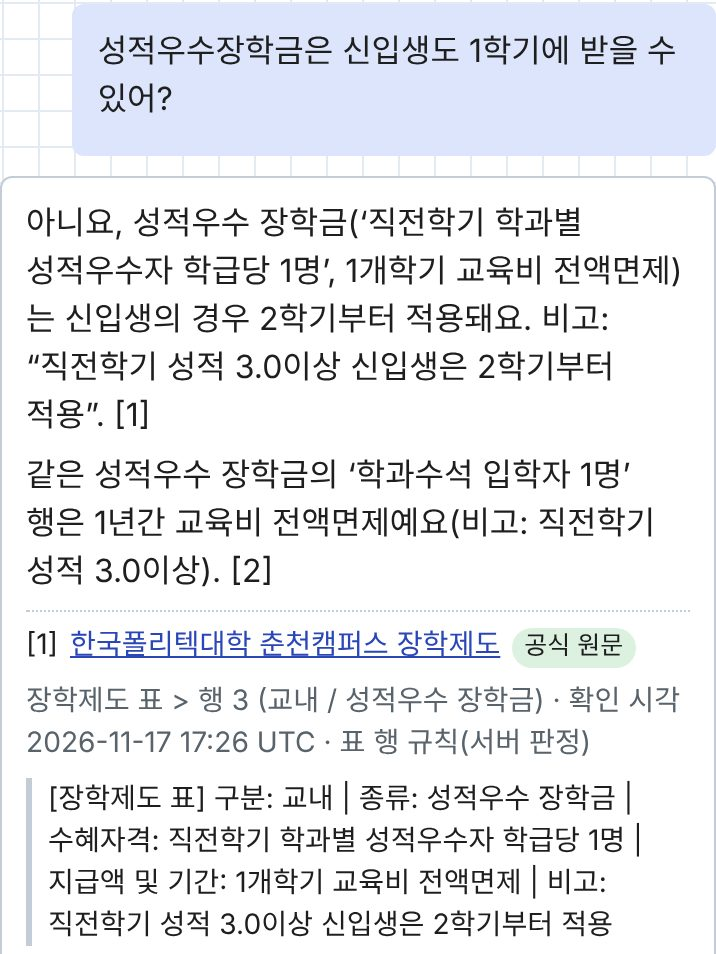
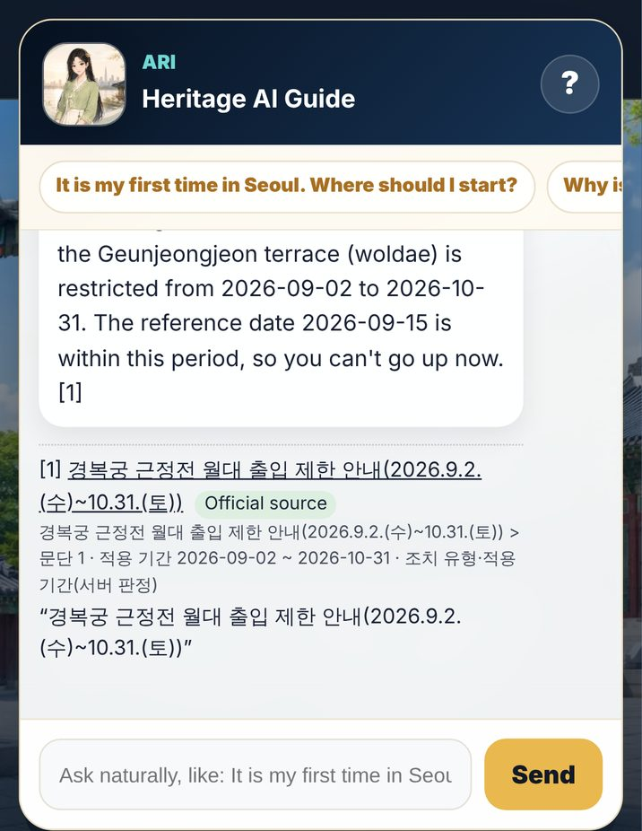

프로젝트
2026년, 5건
| 이름 | 무엇을 | 맡은 일 | 결과 | 시기 |
|---|---|---|---|---|
| Villagen | 글로 적으면 AI가 3D 가구를 만드는 마을 RPG | 팀장, 기획과 게임 안 코드, 3인 팀 | TRIPOTHON S1 SEOUL 수상 | 2026.10 |
| 공통 RAG 엔진 | 두 서비스가 함께 쓰는, 출처를 확인해 답하는 챗봇 엔진 | 개인 프로젝트, 설계와 검증 | Lolypoly 식단 화면에서 운영 | 2026.11 |
| 내돈내편 | 고령층 음성 금융 안내와 송금 전 피싱 재확인 | 팀장, 기획과 개발 | 웹 공개 배포 | 2026.09 |
| Lolypoly | 폴리텍 춘천캠퍼스 학생용 생활정보 앱 | 팀장, 기획과 개발, 2인 팀 | 프로토타입 공개, 교수 승인 | 2026.11 |
| MARU | 외국인 여행자를 위한 서울 전통문화 코스 추천 | 팀장, 기획, UI, AI 해설 프롬프트 | 웹 공개, 코스 6개와 장소 29곳 | 2026.06 |
Villagen
원하는 물건을 글로 적으면 AI가 3D 가구로 만들어 주는 마을 RPG입니다.
TRIPOTHON S1 SEOUL, Best Use of Tripo 수상
3인 팀 SAMHAP Games, 2026.10


- 내가 한 일
- 팀장. 게임 기획, 게임 안 코드와 문제 해결. 입력 문장에서 게임 기능 키워드와 이미지 키워드를 나눠 처리했습니다.
- 구조
- Godot 클라이언트, Python 서버, SQLite. LLM이 요청을 정리하고 Tripo가 3D 모델(GLB)을 만듭니다.
- 링크
- 팀 저장소
설치해서 해보기
- 필요한 것
- Windows PC, 인터넷 연결
- 내려받기
- 설치 파일 1.03GB, 학교판 0.11.9.10
- 조작
- 이동 WASD, 달리기 Shift, 상호작용 E, 제작 C, 지도 Tab
설치 없이 쓰려면 같은 페이지의 압축 파일(1.09GB)을 받아 풀고 Villagen\Villagen.exe를 실행합니다.
- 내려받기 페이지에서 ‘설치 파일 받기’를 눌러
Villagen_School_Setup.exe를 받습니다. - 파일을 실행하고 설치 위치를 고르면 바탕화면에 Villagen 아이콘이 생깁니다.
- 처음 실행할 때 Windows ‘PC 보호’ 창이 뜨면 추가 정보, 실행 순서로 누릅니다.
- 로그인 화면의 학교 월드에서 아이디와 비밀번호로 계정을 만듭니다.
- 마을에서 C를 누르고 만들고 싶은 물건을 문장으로 적습니다. 예: 작은 버섯 모양 의자. 완성되면 가방에서 꺼내 원하는 곳에 놓습니다.
내돈내편
스마트폰 금융이 어려운 고령층이 말로 금융 업무를 준비하고, 돈을 보내기 전에 한 번 더 확인하게 돕습니다.
- 시기
- 2026.09
- 내가 한 일
- 2인 팀의 팀장. 기획부터 개발, 배포까지 맡았습니다.
- 설계
- AI는 말의 의도와 위험 신호를 정리하고, 송금을 멈출지는 서버 규칙이 정합니다. 위험 신호 13종, 강제 보류 조건 6가지.
- 기능
- 예금 상품 비교와 예상 이자, 음성 입력과 읽어 주기. API 키가 없어도 Mock 모드로 끝까지 시연됩니다.
- 기술
- Next.js, TypeScript, OpenAI API, Vercel
2026 금융 AI Challenge 출품작. 모든 계좌와 거래는 시연용 가상 데이터입니다.
직접 해보기
- ‘송금이 안전한지 볼래요’를 누릅니다. 예시 상황이 먼저 분석됩니다.
- 입력칸에 직접 적어 봅니다. 예: 아들이 폰이 고장났다며 문화상품권 50만 원어치 사서 보내달래요
- 송금 보류 화면과 위험 이유를 확인합니다. 예금 비교는 ‘2천만 원을 1년 맡기고 싶어’로 해 볼 수 있습니다.

소개
한국폴리텍대학 춘천캠퍼스 AI융합과 1학년입니다. 데이터와 소프트웨어가 어떻게 돌아가는지 이해하고, 그걸로 실제 문제를 푸는 사람이 되려고 합니다. 이번 겨울방학에 AI와 데이터로 자료 관리와 업무를 개선하는 인턴 자리를 찾고 있습니다.
- Python, Django
- Lolypoly, 당근마켓 클론(실시간 채팅)
- FastAPI, PostgreSQL, pgvector
- 공통 RAG 엔진
- Next.js, TypeScript
- 내돈내편
- JavaScript, HTML, CSS
- MARU, 이 포트폴리오
- Java, Spring Boot, MySQL
- MARU API, 수업 프로젝트
- Godot, Python 서버
- Villagen
- 자격증
- ADsP, 리눅스마스터 2급
Lolypoly
학교 홈페이지에 흩어진 식단, 학사일정, 공지를 휴대폰 한 화면에서 봅니다.
- 시기
- 2026.11
- 내가 한 일
- 2인 팀의 팀장. 기획과 개발을 맡고, Codex로 구현하며 결정과 진행은 저장소 문서에 남깁니다.
- 설계
- 공식 홈페이지를 Playwright로 정해진 시간에 수집해 DB에 저장하고, 화면은 DB만 읽습니다. 학생이 앱을 열 때마다 학교 사이트에 접속하지 않습니다.
- 기능
- 식단, 학사일정, 공지, 의견 보내기, 홈 화면 설치(PWA), 출처와 함께 답하는 안내(공통 RAG 엔진)
- 기술
- Django, Playwright, SQLite, Docker, Render
프로토타입과 기획서를 교수님께 승인받았고, 학생 20~30명 시험 사용을 준비하고 있습니다.

MARU
외국인 여행자에게 서울 전통문화의 맥락을 설명하고, 관심사와 시간에 맞는 코스를 추천합니다.
- 시기
- 2026.06
- 내가 한 일
- 팀장. 서비스 기획, 화면 설계, AI 해설 프롬프트, README
- 기능
- 여행 조건 선택, 추천 코스 6개, 장소 29곳 해설, 지도 앱 길찾기, 4개 언어 전환, 챗봇 아리
- 설계
- 문화 사실은 데이터에, 추천 점수는 서버에, 쉬운 해설은 AI에 맡겼습니다. AI 연결이 없으면 앱 데이터로 답합니다.
- 기술
- HTML, CSS, JavaScript, JSON, GitHub Pages, Spring Boot

공통 RAG 엔진
학교 생활정보(Lolypoly)와 전통문화 안내(MARU), 성격이 다른 두 서비스의 챗봇이 같은 검색·근거 확인 엔진을 씁니다. 근거가 없으면 지어내지 않고 확인할 곳을 알려 줍니다.
Lolypoly 식단 화면에서 운영 중
개인 프로젝트, 2026.11. 구현은 Claude Code로 하고 설계, 평가, 운영 적용을 맡았습니다.
- 질문과 화면 맥락보고 있는 식단 날짜, 고른 장소
- 서비스별 규칙어댑터가 자료 범위와 조회 방식을 정합니다
- 표 조회 또는 문서 검색식단·장학표는 AI 없이 DB에서, 문서는 키워드와 의미 검색을 합쳐서
- 필요할 때만 AI 작성고른 근거 4조각만 넘깁니다
- 서버가 다시 확인인용 원문, 날짜, 숫자, 공지 적용 기간
- 답과 출처근거가 부족하면 공식 확인 경로를 안내합니다
- 내가 한 일
- 공통 엔진과 서비스별 어댑터로 나누는 구조, 답하지 않을 기준(근거 부족, 기간이 지난 공지), 상업 이용이 가능한 모델과 10초 이내 응답 목표, 학교 PC 운영을 정했습니다. 구현과 테스트 초안은 Claude Code로 만들고, 평가에서 나온 틀린 답을 보고 규칙을 고쳤습니다.
- 자동화
- 학교 PC가 매일 공식 홈페이지 자료를 다시 모아 DB와 검색 색인을 갱신하고, 자주 묻는 질문의 답을 미리 만듭니다. 미리 만든 답은 사람이 맞다고 확인한 것만 화면에 나갑니다.
- 검증
- 자동 테스트 67개(가짜 모델, 실제 PostgreSQL). 63문항 평가에서 모두 10초 이내 응답(4코어 CPU, 최대 8.1초). 두 앱 화면을 거치는 확인 36개 통과. 모두 v0.5.0, 2026-11-20 기록입니다.
- 한계
- 인용이 뜻까지 맞는지는 사람이 검토해야 합니다. 엔진이 학교 PC에 있어서 PC가 꺼지면 안내 칸이 답하지 않습니다.
- 기술
- Python, FastAPI, PostgreSQL + pgvector, multilingual-e5-small, Ollama(qwen2.5:1.5b), Docker, Windows 작업 스케줄러
- 운영
- Lolypoly 식단 화면의 ‘롤리폴리 안내’
- 로컬 검증
- MARU 챗봇 아리 연동. 공개 사이트의 아리는 아직 기존 방식으로 답합니다.
- 준비 중
- MARU용 공개 연결 경로
직접 해보기
- Lolypoly 식단 화면을 엽니다. 업데이트 안내 창이 뜨면 ‘확인’을 누릅니다.
- ‘롤리폴리 안내에게 물어보기’에 적습니다. 예: 오늘 점심 뭐야? 성적우수장학금은 신입생도 1학기에 받을 수 있어?
- 답 아래 출처를 눌러 학교 홈페이지 원문과 비교합니다.
안내 칸이 답하지 않으면 학교 PC가 꺼져 있는 경우입니다. 이 섹션의 화면 기록으로 대신 확인할 수 있습니다.


연락하기
- GitHub
- lovesome0405